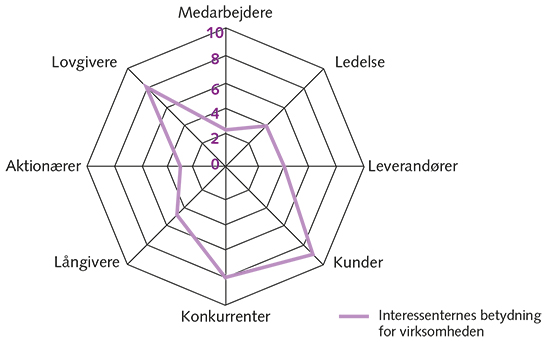

- Hvem har interesse I virksomheden?
- Ved alle interssenter går der enten ressourcer ind I virksomheden eller ud af virksomheden.
Hvis krise:
- Virksomheden kan selv vælge de bedste medarbejdere.
Typiske interessenter:
- Medarbejdere
- Ledelse
- Kunder
- Leverandører
- Långivere
- Konkurrenter
- Aktionærer
- Lovgivere
Interessentanalyse:

Hvornår er interessenter vigtige / skal man være opmærksom på dem?
Medarbejdere
- Udd. Niveau
- Specialiseret
- Optræning
- Arb. Løshed (indenfor stoffet).
- Varierende efterspørgsel
- Netværk / relationer til specifikke medarbejdere.
Ledelsen
Leverandører
- Kan varen købes hos andre?
- Hvor specialiseret
- Antal leverendører
- Komplekse aftaler med leverendør
- Monopol på et produkt
Kunder
- Konkurrenter:
Långivere:
Aktionærer
Lovgivning
- Hvor reguleret er området? Hvor meget lovgivning?
- Hvor ofte ændres?